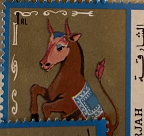
| SOURCE | TITLE| IMAGE MATCH | click to source page |
| www.facebook.com | A close look at the broadcloth & stitching of a c. 1750-1821 ... | 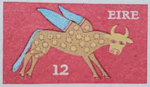 |
| www.ebay.com | IRELAND # 263 Used WINGED OX | eBay | 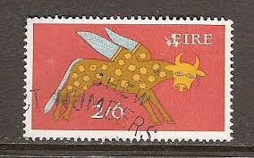 |
| www.hipstamp.com | Sharjah-Airmail Stamp: 1972- Apollo Space Heroes: CTO NH ... | 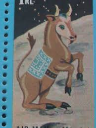 |
| fineartamerica.com | 1975 IRELAND Winged Ox Postage Stamp Jigsaw Puzzle by Retro ... | 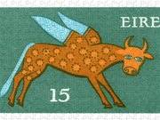 |
| www.hipstamp.com | 355 stag - Ireland | Europe - Ireland, General Issue Stamp ... | 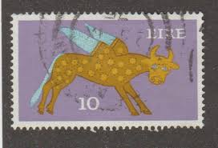 |
| www.etsy.com | USPS Marble Base Commemorative Stamp Paperweight by the ... | 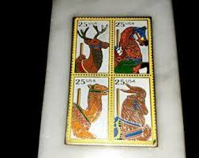 |
| ittybittystampcompany.com | Ireland Scott # 355 Mint Never Hinged – The Itty Bitty Stamp ... | 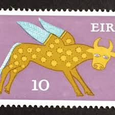 |
| www.etsy.com | Ireland 1968-69 Definitive Stamps – Celtic Engraving, High ... | 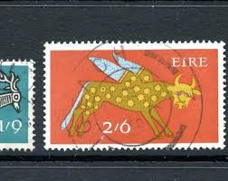 |
| findyourstampsvalue.com | Winged Ox from Lichfield Gospel Book: Types of 1968-69 12p ... | 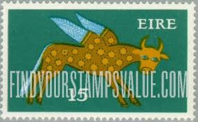 |
| m.poppe-stamps.com | Poppe Stamps: Ireland Republic, 1971, 353, Numbers - Values ... | 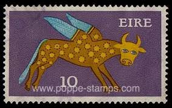 |
| www.ebay.com | Ireland/Eire Postage Stamp - Winged Ox- 5/- | eBay | 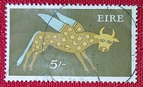 |
| www.ebay.com | U.S. Postage Stamp ~ Carousel Horses (Ram) ~ 25¢ Posted/Used ... | 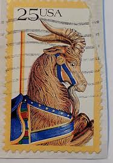 |
| www.etsy.com | Sheet of 50 Carousel Animal Stamps, Vintage Unused USPS ... | 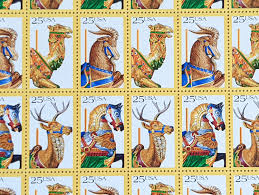 |
| m.poppe-stamps.com | Poppe Stamps: Ireland Republic, 1971, 356, Numbers - Values ... | 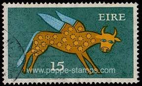 |
| www.ebay.com | Scott #2393...25 Cent...Carousel Animals...Goat...5 Stamps ... | 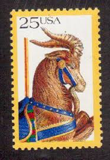 |
| colnect.com | Stamp: Winged Ox, 8th Century (Ireland(Early Irish Art 1968 ... | 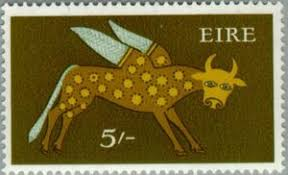 |
| fineartamerica.com | 1975 Ireland Winged Ox Postage Stamp Metal Print by Retro ... | 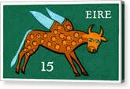 |
| in.pinterest.com | 89 Jamni roy ideas to save today | indian folk art, jamini ... | 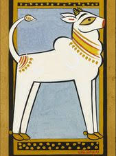 |
| www.ebay.co.uk | IRELAND MNH 260-2 HIGH VALUES 1968 | eBay UK | 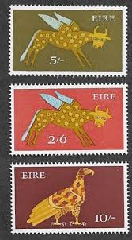 |
| www.hipstamp.com | Ireland 357 (used) 20p winged ox, slate & multi (1974 ... | 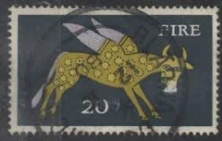 |
| bestiary.ca | Medieval Bestiary : Beasts : Bull | 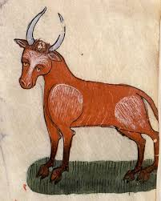 |
| www.ebay.com | Ireland/Eire Postage Stamp - Winged Ox - 17 | eBay | 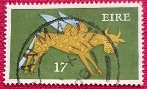 |
| www.shutterstock.com | Ireland Circa 1971 Stamp Printed Ireland Stock Photo ... | 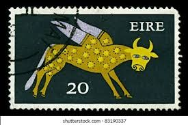 |
| www.market.unicefusa.org | UNICEF Market | Ceramic Coat Rack Painted with Camel Motifs ... | 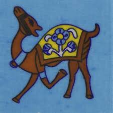 |
| www.hipstamp.com | IRELAND EIRE Stamp Early Irish Art WINGED OX 1974 Mint ... | 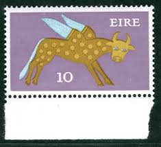 |
| www.mysticstamp.com | 2393 - 1988 25c Carousel Animals: Goat - Mystic Stamp Company | 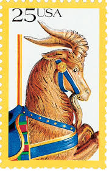 |
| shop.rosiewonders.co.uk | Cow's Head Card | Rosie Wonders | 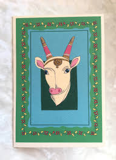 |
| www.ebay.com | Ireland Stamp Scott# 264 Winged Ox 1968-70 MNH H57 | eBay | 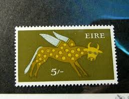 |
| www.instagram.com | It's time to introduce a little mini series of small ... | 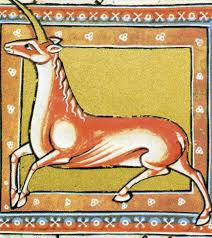 |
| fineartamerica.com | 1975 IRELAND Winged Ox Postage Stamp Digital Art by Retro ... | 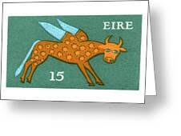 |
| fineartamerica.com | 1975 Ireland Winged Ox Postage Stamp Digital Art by Retro ... | 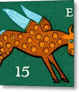 |
| www.postbeeld.com | Stamps from Ireland - PostBeeld - Online Stamp Shop - Collecting | 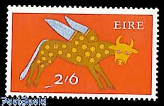 |
| www.indphila.com | India 1957 National Childrens Day Recreation Mnh Single ... | 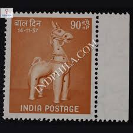 |
| www.reddit.com | What do you think of the anatomy of these cows (Province of ... | 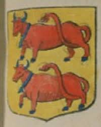 |
| commons.wikimedia.org | File:Celestial Cow.jpg - Wikimedia Commons | 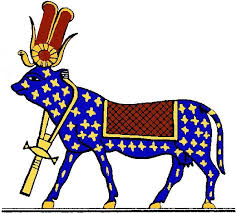 |
| jainpedia.org | Vāsupūjya – Jainpedia | 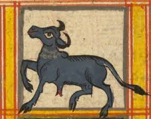 |
| www.redbubble.com | Flying Cow Eire Vintage Postage Stamp" Canvas Print for Sale ... | 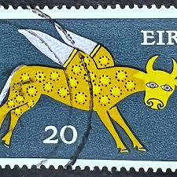 |
| www.pinterest.com | Estampilla de Irlanda | 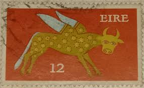 |
| fineartamerica.com | 1975 Ireland Winged Ox Postage Stamp Framed Print by Retro ... | 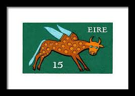 |
| info.mysticstamp.com | American Folk Art | Mystic Stamp Discovery Center | 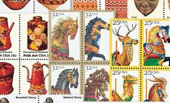 |
| info.mysticstamp.com | American Folk Art Series | Mystic Stamp Discovery Center | 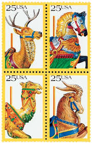 |
| www.mysticstamp.com | 592-99 - 1961 China, People's Republic of - Mystic Stamp Company | 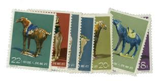 |
| www.ebay.com | FREE SHIP China Year Of Goat 2015 Ram Chinese Lunar Zodiac ... | 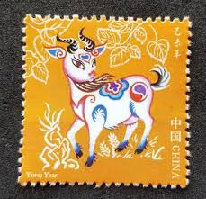 |
| retro-graphics.pixels.com | 1975 IRELAND Winged Ox Postage Stamp Metal Print by Retro ... | 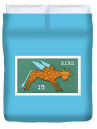 |
| findyourstampsvalue.com | New Year 2002 (Year of the Horse): Horse and Clouds - 新年 ... | 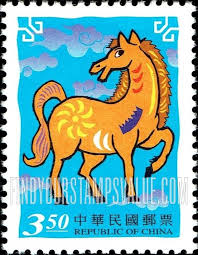 |
| www.mysticstamp.com | 2390-93 - 1988 25c Carousel Animals - Mystic Stamp Company | 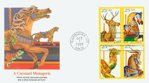 |
| www.xabusiness.com | 2021-1 Xin Chou Year (Year of the Ox) - China Stamps | 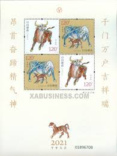 |
| www.instagram.com | 100% hand painted Pichwai Miniature Painting ✨. If you love ... | 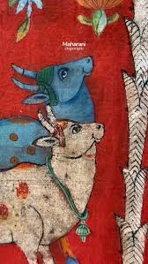 |
| www.pictorem.com | 1975 IRELAND Winged Ox Postage Stamp by Retrographics Wall Art | 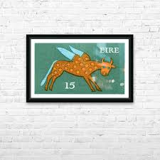 |
| www.indiamart.com | Multicolor Painting of Camel at ₹ 1200/piece in Vadgam | ID ... | |
| bestiary.ca | Medieval Bestiary : Beasts : Buffalo | |
| www.etsy.com | 2021 Xinchou Ox Year Stamp, Acrylic Display+exquisite ... | |
| www.amazon.in | Apka Mart The Online Shop Handicraft Pen Holder - 4 Inch ... | |
| mayawallart.com.au | Cow | Original Artwork Online At Maya | Online Art Gallery | |
| www.shutterstock.com | 1+ Thousand Winged Ox Royalty-Free Images, Stock Photos ... | |
| www.mutualart.com | Jamini Roy | Bull | MutualArt | |
| www.hinduismtoday.com | How the Vedas Divide the Heavens - Hinduism Today | |
| banknotecoinstamp.com | Stamps Theme – Page 36 – Banknotecoinstamp | |
| www.instagram.com | Stamps to mark Year of the Horse Lunar New Year special ... |
{kind=link}